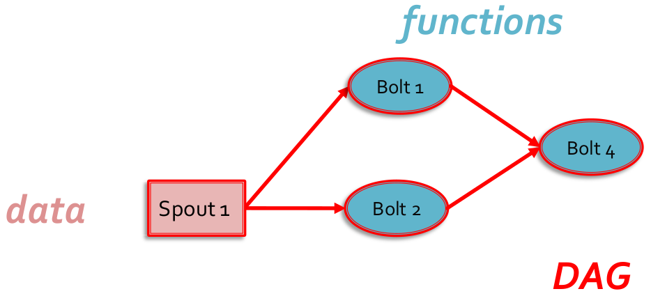
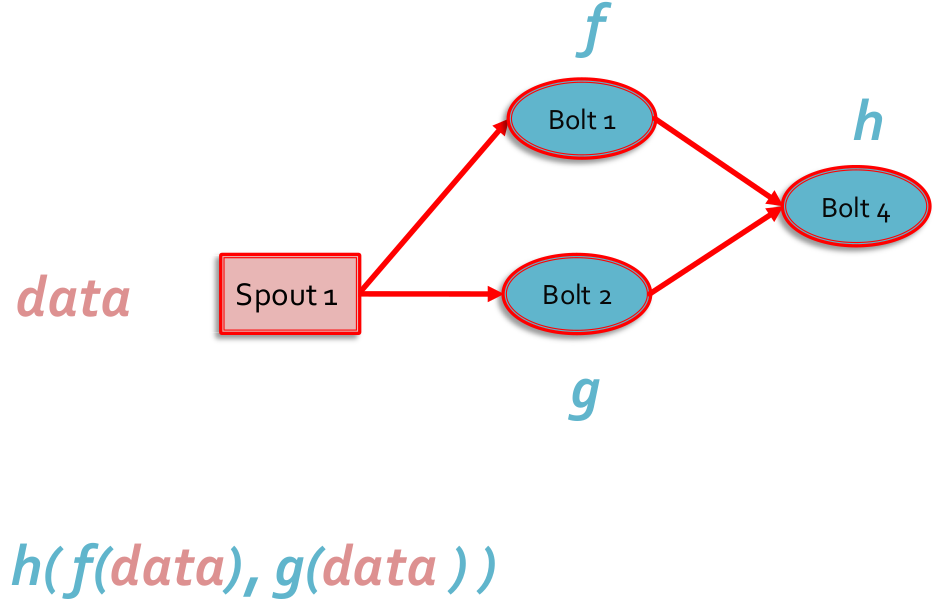
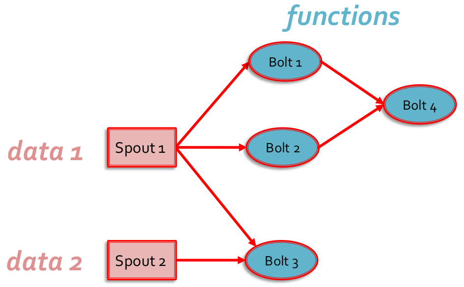

28 Streaming data analytics frameworks
Stream processing frameworks for (big) streaming data analytics
Several frameworks have been proposed to process in real-time or in near real-time data streams:
- Apache Spark (Streaming component)
- Apache Storm
- Apache Flink
- Apache Samza
- Apache Apex
- Apache Flume
- Amazon Kinesis Streams
- …
All these frameworks use a cluster of servers to scale horizontally with respect to the (big) amount of data to be analyzed.
Comparison among state of the art streaming frameworks
Apache Spark Streaming
- Micro-batch applications
- Processes each record exactly once
Apache Storm
- Continuous/real-time computation: very low latency
- Processes each record at least once in real-time: each record could be processed multiple times, hence may update mutable state twice
- Apache Storm Trident API: it is a running modality of Apache Storm that processes each record exactly once (micro-batch); slower than the Apache Storm version
Apache Flink
- Continuous/real-time stateful computations over data streams: low latency
- Processes each record exactly once
Introduction to Apache Storm
Apache Storm™ is a distributed framework that is used for real-time processing of data streams (e.g., Tweets analysis, Log processing). Currently, it is an open source project of the Apache Software Foundation. It is implemented in Clojure and Java (12 core committers, plus about 70 contributors).
Storm was first developed by Nathan Marz at BackType, a company that provided social search applications. Later (2011), BackType was acquired by Twitter, and now it is a critical part of their infrastructure. Currently, Storm is a project of the Apache Software Foundation (since 2013).
Data processing
- Continuous computation: Storm can do continuous computation on data streams in real time; it can process each message as it comes (an example of continuous computation is streaming trending topics detection on Twitter)
- Real-time analytics: Storm can analyze and extract insights or complex knowledge from data that come from several real-time data streams
Features of Storm
Storm is
- Distributed: Storm is a distributed system than can run on a cluster of commodity servers.
- Horizontally scalable: Storm allows adding more servers (nodes) to your Storm cluster and increase the processing capacity of your application. It is linearly scalable with respect to the number of nodes, which means that you can double the processing capacity by doubling the nodes.
- Fast: Storm has been reported to process up to 1 million tuples per second per node.
- Fault tolerant: Units of work are executed by worker processes in a Storm cluster. When a worker dies, Storm will restart that worker (on the same node or on to another node).
- Reliable - Guaranteed data processing: Storm provides guarantees that each message (tuple) will be processed at least once; in case of failures, Storm will replay the lost tuples, and it can be configured to process each tuple only once.
- Easy to operate: Storm is simple to deploy and manage. Once the cluster is deployed, it requires little maintenance.
- Programming language agnostic: Even though the Storm platform runs on Java Virtual Machine, the applications that run over it can be written in any programming language that can read and write to standard input and output streams.
Storm core concepts
Storm can be considered a distributed Function Programming-like processing of data streams. It applies a set of functions, in a specific order, on the elements of the input data streams and emits new data streams, however, each function can store its state by means of variables, and so it is not pure functional programming.
Main concepts
- Tuple
- Data Stream
- Spout
- Bolt
- Topology
Data model
The basic unit of data that can be processed by a Storm application is called a tuple: each tuple is a predefined list of fields. The data type of each field can be common data types, (e.g., byte, char, string, integer), or your own data types, which can be serialized as fields in a tuple. Each field of a tuple has a name.
A tuple is dynamically typed, that is, you just need to define the names of the fields in a tuple and not their data type.
Storm processes streams of tuples. Each stream
- is an unbounded sequence of tuples
- has a name
- is composed of homogenous tuples (i.e., tuples with the same structure)
However, each applications can process multiple, heterogonous, data streams.
Tuple
(1.1.1.1,"foo.com")Stream of tuples
(1.1.1.1,"foo.com")
(2.2.2.2,"bar.net")
(3.3.3.3,"foo.com")
...Spout
Spout is the component generating/handling the input data stream. Spouts read or listen to data from external sources and publish them (emit in Storm terminology) into streams.
- A spout can be used to connect to the Twitter API and emit a stream of tweets
- A spout can be used to read a log file and emit a stream of composed of the its lines
Each spout can emit multiple streams, with different schemas; for example, it is possible to implement a spout that reads 10-field records from a log file and emits them as two different streams of 7-tuples and 4-tuples, respectively.
Spouts can be
- unreliable (fire-and-forget)
- reliable (can replay failed tuples)
Bolt
Bolt is the component that is used to apply a function over each tuple of a stream. Bolts consume one or more streams, emitted by spouts or other bolts, and potentially produce new streams.
Bolts can be used to
- filter or transform the content of the input streams and emit new data streams that will be processed by other bolts
- process the data streams and store/persist the result of the computation in some of “storage” (files, Databases, ..)
Each bolt can emit multiple streams, with different schemas.
- A bolt can be used to extract one field from each tuple of its input stream
- A bolt can be used to join two streams, based on a common field
- A bolt can be used to count the occurrences of a set of URLs
The input streams of a Storm cluster are handled by spouts
- Each spout passes the data streams to bolts, which transform them in some way
- Each bolt either persists the data in some sort of storage or passes it to some other bolts
A Storm program is a chain of bolts making some computations/transformations on the data exposed by spouts and bolts.
Topology
A Storm topology is an abstraction that defines the graph of the computation: it specifies which spouts and bolts are used and how they are connected. A topology can be represented by a direct acyclic graph (DAG), where each node does some kind of processing and eventually forwards it to the next node(s) in the flow (i.e., a topology in Storm wires data and functions via a DAG).



- Notice that there are two input data streams in this topology
- There are also two output data streams
Topology execution
The topology is executed on the servers of the cluster running Storm. The system automatically decides which parts of the topology are executed by each server of the cluster
- Each topology runs until its is explicitly killed
- Each cluster can runs multiple topologies at the same time
Worker processes
- Each node in the cluster can run one or more JVMs called worker processes that are responsible for processing a part of the topology.
- Each topology executes across one or more worker processes
- Each worker process is bound to one of the topologies and can execute multiple components (spouts and/or bolts) of that topology; hence, even if multiple topologies are run at the same time, none of them will share any of the workers
Executor
- Within each worker process, there can be multiple threads that execute parts of the topology. Each of these threads is called an executor
- An executor can execute only one of the components of the topology, that is, any one spout or bolt in the topology, but it may run one or more tasks for the same component
- Each spout or bolt can be associated with many executors and hence executed in parallel
Tasks
A task is the most granular unit of task execution in Storm: each task is an instance of a spout or bolt, and it performs the actual data processing
- Each spout or bolt that you implement in your code executes as many tasks across the cluster
- Each task can be executed alone or with another task of the same type (in the same executor)
The number of tasks for a component is always the same throughout the lifetime of a topology (it is set when the topology is submitted), but the number of executors (threads) for a component can change over time (i.e., it is possible to add/remove executors for each component).
The parallelism of the topology is given by the number of executors (i.e., number of threads). For each spout/bolt the application can specify
- The number of executors: this value can be changed at runtime
- The number of tasks: this value is set before submitting the topology and cannot be change at runtime